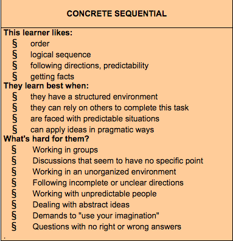

"It is what it is" - Concrete Thinker
June 26, 2015
After reading about Anthony Gregorc's theory on thinking styles, I learned that I am concrete sequential. If you want to take the quiz, it is right here! Concrete refers to how I tend to register information through my five senses. This is opposite of abstract thinkers who are better at visualizing and looking beyond what is there in order to see something more. Sequential refers to how my mind organizes information in a step-by-step order. This is opposed to random thinkers who organize information in chunks.
Here is a summary of Concrete Sequential mindset taken directly from Gregorc's website: 
I think this style of thinking will aid my time management while at DevBootcamp. I like to make schedules for myself so I know what I am suppose to be doing and when it should be done. This also helps me organize my progress in learning. I can already imagine myself struggling when new problems arrise. I can only tell myself to calm down and try to step back and look at the problem in a different way. I tend to get myself in trouble by overthinking.
My biggest struggle so far 3 weeks into DBC, was coming up with a design for my website. I am not a very creative person. When asked to create a website from scratch, every detail stressed me out. What colors to choose, how to arrange my content, what font to make my words, etc. Now that I look back, this fits prefectly with my style of thinking. I only got through the challenge by telling myself that I just need a simple layout to begin with and to not over do it. I believe once I get more practice, I should be able to improve this. I also think that I should get into the habit of noting the things I like/dislike on websites that I visit. This could give me more of an idea of how I like things to look.
Another minor struggle I noticed was that when I worked in pairs, I preferred a more detailed navigator. It was harder for me to go off of only a litle bit of instructions so I found myself asking my navigator to clarify many times. I do not see this as too big of an issue so far as once I speak up, my pair has always been nice about clarifying. It is nice that now that I can put a name to what I prefer. In the future, I think I should let my pair know beforehand how I work best.
As for expanding my knowledge, I definitely feel as though I should be exposed to more coding. I can try and fix this by viewing source codes of websites I like or even browsing through github repos to see if I can understand any of the codes out there. I realize this might send me down a rabbit hole each time so maybe I can limit myself with viewing one code each day at first and see where it goes from there. All in all, I definitely need to make some changes and this is going to be an exciting journey for me.